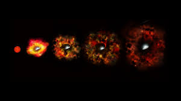

Abstract The blackhole information paradox tell us about something important about
the way quantum mechanics and gravity fits together.In this I will try to give
somebasic idea about the working of blackholes.
The Entropy Puzzle of Blackhole
Take a object and throw it into the blackhole.The object some amount of entropy and get
vanished at the singularity of blackhole.The decreased entropy voilates the second law
of thermodynamics.
We all thinks that it would a little bit silly,like if we threw the object in trash,its
entropy will be present in the trash and of course we can see it. But in case of blackholes
this is little different.
When the object fell inside the blackhole,it increases the mass of blackhole and also
the size of event horizon.
Bekenstien Entropy
Sbek=A/4G
to the blackhole,where A is the area of horizon and we have set \[
c = \hbar = 1
\],then
\[
\frac{dS_{\text{total}}}{dt} = \frac{dS_{\text{matter}}}{dt} = \frac{dS_{\text{bek}}}{dt} \geq 0
\]
Hence,second law of thermodynamics is true.
| Name |
Mass |
X(in light years) |
Y(in light years) |
| Cygnus X-1 |
16 |
6600 |
-2400 |
| SS-433 |
11 |
8000 |
-14000 |
| Nova Monocerotes 1975 |
Sagittarius |
27,000 |
3,000,000 |
| Messier-31 |
Andromeda |
2,300,000 |
45,000,000 |
| NGC-1023 |
Canes Venatici |
37,000,000 |
45,000,000 |
| Messier-81 |
Ursa Major |
13,000,000 |
68,000,000 |
| NGC-3608 |
Leo |
75,000,000 |
190,000,000 |
| NGC-4261 |
Virgo |
100,000,000 |
520,000,000 |
| Messier-87 |
Virgo |
52,000,000 |
3,000,000,000 |
The first three of them are called Intermediate-mass blackholes. The remainimg ones arecalled supermassive blackholes.
The Nearest Stellar Black Holes

How close is the nearest stellar blackhole to Earth?Because our Milky Way galaxy is a flat disk of stars.
We can use cartesian coordinates to describe the position of stars and blackholes in our galaxy. The center
of the galaxy is at the origin (0,0,0) and the Sun is located at approximately (8,000,000) light years from
the center. The nearest stellar black hole to Earth is V616 Monocerotis, which is located at approximatel
y (3,000,000) light years from the Sun.
Black Holes are created when massive stars collapse at the end of their lives and explodes as supernova.
The Nearest Stellar Black Holes
| Name |
Mass |
X(in light years) |
Y(in light years) |
| Cygnus X-1 |
16 |
6600 |
-2400 |
| SS-433 |
11 |
8000 |
-14000 |
| Nova Monocerotes 1975 |
11 |
-1400 |
2400 |
| Nova Persi 1992 |
5 |
5600 |
3300 |
| IL Lupi |
9 |
6500 |
-11000 |
| Nova Vulpeculi 1988 |
8 |
2200 |
-6100 |
| V404 Cygni |
12 |
6900 |
-4000 |
The Nearest Super Massive Blackhole

Within the dense cores of most of the galaxies, lurk black holes that have grown over the
years into super massive objects containing millions of times the mass of stellarblack holes.
Some rare galaxies of 2-3 of them, but far more have only one.
Black holes may does not lose mass.They steadily grow by accreting matter from their
surroundings.
What is actually a Black hole?
Black holes are one of the mysterious objects in our cosmos.Near blackholes our physics breaks down.
Black holes are the most extreme objects in our universe, where gravity is so strong that nothing,
not even photons can escape from it.The Black holes are so intensly packet that gravity can overcome
all other force and crush matter to a single point called singularity. At this point the density
becomes infinite and the laws of physics as we known the stops to work.
Black are created when massive stars and the end of their lives collapse after they ran out of fuel
whuch use to make them hot bright and stable.Then the star undergoes supernova explosion

Super Nova
Supernova occurs when massive stars(typically mass more than 20 times the mass of our sun) exhaust
their fuel.and their core collapses often triggering a voilent explosion. The remnant core explodes further
to form black holes, tough some stars failed to supernova and diretly forms black holes.
A supernova on a average releases the energy of about 10
44joules to 10
46joules.
Over 99% of the energy is released in the form of neutrinos and rest is releaased in the form of
electromagenetic radiation and kinetic energy of the ejected material.
What is inside a blackhole?
The answer of this is sadly not known by us that whatis really inside the black hole.But still
we can make some guess about it. We known that black hole has event horizon and also a point named
as singularity.Lets discuss them in breif.

Event Horizon
In simple words Event Horizon is the boundary of limiting a blackhole.
It is also called the point of no return because once an object crossed the event horizon
the object can't escape it, even light itself can't overcome its gravitational pull.
Here the escape velocity is greater than of equal to speed of light(3*108 m/s).
Since General Relativity does not allow any object to travel more than speed of light
so escaping from blackhole is impossible.Like any radition generated inside event horizon can
never escape the black hole.That is why we say entropy of blackhole always increases, eventhough
entropy of our surrounding increasing.
May in future we may also able to manipulate if we are successful to manipulated the entropy of
our surrounding and decrease it, then we can also decrease the entropy of blackhole and may be able
to escape from it.
The size of event horizion is directly proportional to the mass of blackhole, more the mass of
blackhole larger the event horizon.For non rotating black hole the radius of event horizon is given by
Schwarzschild Radius that delimits the a spherical event horizon and is given by the formula
$$R_g = \frac{2GM}{c^2}$$
Where Rg is Schwarzschild radius, G is Gravitational Constant, M is
the Mass of object and c is speed of light.
For mass as small as human beings Schwarzschild Radius is of order 10-23cm, much lesser than
the nucleus of an atom, and for stars like sun it is about 3km(2 miles)
Though black holes are invisible but we can detect them by observing the effect of their garvity on nearby
stars and gas. When matter falls into a black hole, it heats up and emits X-rays that can be detected by telescopes.
We can also detect the presence of black hole by observing the gravitational waves produced when two black holes merge together.
Though blackholes does not emits radiations, electromagentic waves but matter particles may be radiated
from the outside of event horizon via Hawkings Radiations
Singularity
General theory of Relativity predicts that at the centre of a black hole, there is point
of infinite density and negligible volume called singularity.We don't even know that singularity
is a physical structure or just a result of mathematical equations.
Penrose-Hawkimg Singularity
- In 1965, Roger Penrose prove that if a star collapes to form a black hole,
then the singularity must be hidden behind the event horizon, and cannot be observed from outside.
This is known as the Penrose-Hawking Singularity.
- ThePenrose-Hawking Singularity Theorms are a set of results in General Relativity that attempt
to describe the nature of singularities that can arise in spacetime under certain conditions. The theorms
are based on the work of Roger Penrose and Stephen Hawking, who showed that under certain conditions, singularities can form
in spacetime, and that these singularities are inevitable in certain circumstances, such as the collapse of a massive star to
form the black hole. The theorms also describe the properties of these singularities, such as their curvature and their behaviour
under certain conditions.
-
Hawking's Singularity Theorem is for the whole universe, and also works backward in time.
It guarantees that the Big Bang has infinite densit. The theorem is more restricted and only holds when matter obeys a strong energy conditions
in which enrgy is larger than the pressure.All ordinary matter, with the expection value of sclar field, obeys with the conditions.
Proof Of Theorem
Asumptions Of Theormes
1. An energy condition is satisfied, which means that the energy density of matter is non-negative and pressure is not too large.
2. The spacetime is globally hyperbolic, which means that it has a well-defined casual structure and that there are no closed timeline curves.
3. Gravity is strong enough to cause the formation of a trapped surface, which is a region of spacetime where all light rays are converging inwards.
A key tool used in the proof of singularity theorems is the Raychaudhari Equation, which describes the divergence theta of a congruence of geodesics.
The divergence of congruence is defined as derivative of the log of determinant og congruence volume.
The Ray chaudhari equation is given by-
$$\dot{\theta} = - \sigma_{ab}\sigma^{ab} - \frac{1}{3}\theta^2 - E[\vec{X}]^a{}_a$$
where $$\sigma_{ab}$$ is the shear of the congruence, $$\theta$$ is the expansion of the congruence, and $$E[\vec{X}]^a{}_a$$ is the trace of the elctric part of the Weyl tensor.
The Raychaudhari equation describes how the divergence of a congruence of geodesics changes as it moves through spacetime, and it is a key tool in the proof of singularity theorems
because it allows us to show that under certain conditions, the divergence of a congruence of geodesics will become negative, which indicates that the geodesics are converging and that a singularity is forming.
Accretion Disc
A black hole accretion disc is a rotating structure of hot gas, plasma and dust spiraling toward a central black hole formed by material captured by its intense gravity.Friction and magnetic forces within the disc
heat thus material to extremely high temperatures, causing it to emit intense radiation across the electromagnetic spectrum, including X-rays and gamma rays. The accretion disc is a key component of many active
galactic nuclei and quasars, where it can outshine the entire host galaxy. The study of black hole accretion disc provides insights into the physics of black holes, the behaviour of matter under extreme conditions,
and the processes that drive the growth and evolution of black holes in the universe.